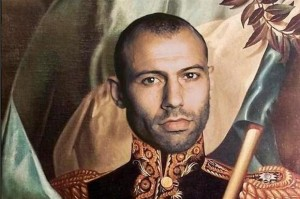
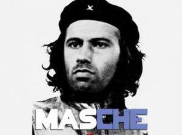
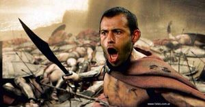

Javier Mascherano
 De: La Frikipedia, la enciclopedia extremadamente seria.
De: La Frikipedia, la enciclopedia extremadamente seria.
«Estoy cansado de comer mierda»
~ Mascherano quejándose del menú en el mundial
«Me abrí el ano, por eso el dolor»
~ Mascherano sobre su relación con Robben
Javier Mascherano, alias "El Jefe" (San Lorenzo, Provincia de Santa Fe, Argentina; 8 de junio de 1984 - Jamás morirá) Semidiós, especie de Hobbit rapado de esqueleto de ADAMANTIUM (el mismo de WOLVERINE) con bolas de ACERO 15-5 PH. Hijo no reconocido de Chuck Norris y la Mujer Maravilla. Mundialmente famoso por aplastar Holandeses. Combatió en la película "300" bajo el nombre de Leónidas y en la película "Gladiador" bajo el nombre de Rusell Crowe. Los argentinos le dieron un fusil y con él conquistó la Patagonia, recuperó las Islas Malvinas, y mató al Juez Griesa (Buitre dueño de los Holdouts).
Niñez: De pequeño solía jugar en el patio de casa de su San Lorenzo natal. Los demás niños no querían jugar con él así que se entretenía arrancando árboles y atajando los rayos de Zeus. Uno de estos rayos lo golpeó y le dio una super-motricidad-electro-bronco-espasmo-cardio-pulmonar que lo convirtió en el incansable quiebrapiernas que conocemos hoy en día. Fue entonces cuando le prendieron las ganas de jugar al fobal. Comenzó pateando bolas de bowling, y mas tarde, balas de cañón. Estas pelotas no le duraban mucho porque 1) o las destrozaba, 2) o las mandaba a la luna provocando todos esos cráteres que la hacen parecer un queso gruyere. Por último su padre (Chuck) le prestó lo único que podía resistir ese trato tan brutal: sus propias bolas. Con ellas pasó a entrenar en forma seria hasta convertirse en el jugador que es hoy.
Profeshional life: Luego de su recordado paso por "Gallinas Plate Fobal Club" y tras haber pasado por "Palmeras Fobal Club y "Liverpool (Piscina libre) Fobal Clud" desembarcó en "Lio Messi Fobal Club". Pero el jugar al fobal es tan solo un Hobby, una fachada para esconder sus verdaderas profesiones: 1) Ser el doble de Superman en las escenas peligrosas del Cine, 2) Ser el doble del Guasón cuando caer del edificio; 3) Ser el doble de Homero Jay Simpson cuando recibe cañonazos en el estómago; y muchos otros trabajos verdaderamente rudos.
 Último procer argentino
 Mascherano tomando las luchas que el Che no podía
 Mascherano en la batalla de las Termópilas. Cuando se fue, los persas mataron a los espartanos
Ficha
Nombre completo: JAVIER ANTONIO CORAZÓN DE LEON TERMINATORSCHNEGGER MASCHERANO
Nacionalidad: ARGENTINOSAURIO REX
Ocupación: TODAS LAS QUE REQUIERAN QUEBRAR PIERNAS Y ATAJAR METEORITOS
Hobby: JUGAR AL FOBAL EN MESSI FOBAL CLUB
Vidas pasadas: WILLIAM WALACE, LEONIDAS, HERCULES, ROCKY BALBOA, BIN DISEL Y "LA MOLE"
Amantes: TODAS LAS MODELOS DE ESTE LADO DEL ATLÁNTICO, Y ROBBEN
Algunos hechos sobre mascherano

|
PELIGRO
Este artículo o sección no es más que una torpe lista. Si crees que vale la pena, edítalo para mejorar su calidad y excelencia
|
- Mascherano no hace flexiones de brazos, empuja la Tierra
- Mascherano no te recupera la Malvinas, te conquista Inglaterra.
- Si mandamos a Mascherano a negociar con los fondos buitres trae vuelto.
- Mascherano no dejaba que a Newton se le cayera la manzana
- Mascherano SABE cómo es él, en qué lugar se enamoró de ti, de dónde es y a que dedica el tiempo libre.
- Voldemort tiene miedo de nombrar a Mascherano.
- Mascherano te quita lo bailado.
- Mascherano le dijo a Yoda "Que la fuerza te acompañe a vos, amigo. Yo ya tengo"
- Cuando Jesus iba a multiplicar los panes, aparecio Mascherano y dijo : "Tranquilos muchachos, traje facturas."
- Sheldon Coopper le deja a Mascherano "SU" lugar.
- Mascherano no le pregunta a la mujer "qué te pasa?". Mascherano sabe.
- La heladera se pone las ojotas cuando mascherano va a abrirla descalzo.
- Mascherano simmplemente entra caminando a Mordor.
- Macherano fue el instructor de MacGiver.
- Mascherano le dice a Neymar "levantate y anda" y él se levanta de la silla de ruedas y se pone a hacer jueguitos con la pelota.
- Mascherano va al programa los 8 escalones y lo manda a estudiar a Sofovich.
- El perro de Mascherano colgó un cartel en la puerta que decía "Cuidado con el AMO"
- Mascherano raspa un fósforo usado y se prende.
- Masche le dice a Brasil "que se siente", y Brasil se sienta
- Mascherano gana el Master Cheff con un pancho con mostaza.
- Mascherano convence a Romero de que es un buen arquero.
- A Mascherano le das una pista y encuentra a Julio López
- Mascherano sigue descargando películas de Taringa.
- Mascherano sabe qué tiene el petiso cuando las provoca.
- Mascherano actúa en Game of Thrones y no se muere.
- Mascherano mata el 0.01% de las bacterias que no mata Lysoform
- Mascherano lo convence al Indio Solari de que sí lo soñó.
- Mascherano le da una charla motivadora a Karina Jelinek y se recibe de Ingeniera.
- Mascherano le cura las heridas al señor Miyagui.
- Mascherano se levanta al mediodía y Dios lo ayuda igual.
- Mascherano sale con Wanda Nara y no se entera nadie.
- Mascherano le toca el timbre a los testigos de Jehová.
- Mascherano nos organiza y cogemos todos.
- Mascherano prepara fernet con Pepsi y nadie le dice nada.
- Mascherano compra en la salada y le dan Ticket.
- Lo que la gotita pega Mascherano lo despega
- Mascherano le hace 4 preguntas al rey de los minisupermercados.
- Mascherano depositó dólares y recibió dólares.
- Mascherano pela la cebolla y llora la cebolla.
- Mascherano encontró el unicornio azul y trajo uno verde por las dudas.
- Mascherano va a la ferretería, pide el cosito que va en el coso, no le preguntan nada y le dan lo que quería.
- Mascherano les pasó a los de Google el algoritmo escrito en una servilleta
- Mascherano atrapó al Correcaminos con botines marca Acme
- Mascherano juntó las esferas del dragón para concederle un deseo a Shenlong
- A Mascherano le queda merengue en las dos tapitas de las Merengadas
- A Mascherano le regalan un caballo y le mira los dientes
- A Mascherano lo mandás al chino con caramelos y vuelve con monedas
- Mascherano entra a la página de la AFIP y le dejan comprar US$ 100000
- Jesús se pregunta ¿qué haría Mascherano?
- Mascherano hace hablar con fluidez a Maradona
- Mascherano te acomoda a Rose, Jack y 10 más del Titanic en el tablón, y él sobrevive en el agua
- Mascherano no se golpea el dedo chiquito con la mesa, la mesa se lo golpea con Mascherano
- Mascherano mata dos tiros de un pájaro
- Cuando el Chapulin Colorado pregunta "quién podrá defenderme?" aparece Mascherano
- Si a Mascherano la mujer le dice "Hace lo que quieras", el hace lo que quiere
- Mascherano enchufa siempre los pendrives del lado correcto
- Mascherano no aprendió a andar en bici, la bici aprendió a llevar a Mascherano
- Mascherano muerde a Luis Suárez y no lo sancionan
- A mascherano le roban el celular en Fuerte Apache y despues lo recupera
- Icardi no se encara a la mujer de Mascherano
Autor(es):
- Fordus
- Harry El del Pote
- Ocioso
- Sr. Superman
- Ezesalta
Frikipedia 2005-2016, Licencia
GFDL 1.2 - Extraído por FrikiLeaks